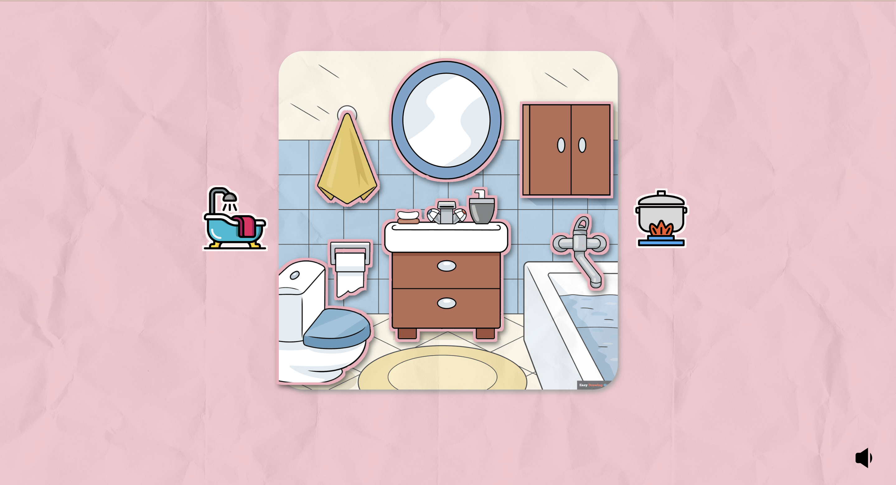

The Noisy House is a musical game that helps toddlers explore and mix music using familiar everyday objects. By clicking, hovering, and moving their mouse, children can experiment with sounds and create their own music without needing to understand musical rules or instructions. The aim of this document is to highlight the design process, main interactions of The Noisy House project
The aim of this scenario is to design a musical toy for young children who have minimal language skills. The goal of this design is to make it easy to understand and interact with. The design should encourage them to experiment with music and learn through play.
The Noisy House responds to this scenario by making the visuals and interactions simple. I decided to use a game to help children learn about music by interacting with sounds in the form of familiar household objects instead of traditional music-making tools that have complicated instructions and rules. These might be overwhelming for toddlers.
The interface mainly uses visual interactions, so it is easy for children to understand how to play without relying on language skills. It also encourages toddlers to experiment by mixing multiple sounds together and creating their own music.
The Noisy House
When users open the link, they will see a pastel, colourful illustration of a room they are familiar with, such as a kitchen or bathroom. Each room contains familiar household objects that children can interact with to discover sounds and create their own musical combinations.
Click to know more about - Design Ideas and InspirationThis game uses simple interactions like mouse clicking and hovering, which makes it accessible for toddlers.
- Clicking an object to start or stop the sound loop.
- Clicking multiple objects at once to create their own musical compositions.
- Hovering the mouse over an object to listen to a sound preview.
- Children can explore new sounds before deciding which sounds they want to include in their music.
Move Mouse Up: louder
Move Mouse Down: quieter
To make the interaction more interesting and fun, I added this extended technique. When the player moves the mouse around the canvas, they can control the volume. When the cursor moves up, the sound becomes louder, and when it moves down, the sound becomes quieter, instead of just turning sounds on and off. I believe this feature gives children more control over their musical experience without adding complicated buttons or settings. However, I understand that moving the sound up and down can be confusing, which is why I added a volume icon to reduce confusion.
Move Mouse Right: panning right
Move Mouse Left: panning left
Another interaction is panning. When the player moves the mouse to the right, the sound will come from the right speaker, and when they move it to the left, the sound will come from the left speaker. This allows children to explore how sound can move between the two sides by simply moving their mouse. I think this makes the interaction more playful because children can experiment with both volume and sound direction.
I added volume icons mainly to help children understand how the effect and interaction work. The indicator changes according to the current volume level, using 3 different icons: muted, low volume, and full volume. These icons give users immediate feedback without requiring children to read numbers or text. They also help connect their mouse movements with the changes they hear, making the interaction easier to understand.
In this project, I use pastel colours mainly because the target audience is toddlers, so the colours should be soft and colourful. This makes the interface less overwhelming but still interesting to them. The main colours are blue and orange. I use blue in the bathroom scene because it relates to water, and orange in the kitchen scene because it relates to fire in the kitchen. The drawing style is also a simple and clean illustration inspired by children's books, making it child-friendly. I designed the objects like stickers because young children love stickers, which is why the background has a paper texture.
The interface only uses visual elements like icons, images, and colours to communicate interactions, so it is easy to understand without descriptions. The main feedback comes from the object stickers. Each object is designed to look like a sticker to attract children, and when they interact with an object, it gives different feedback.
For example:
Hover
The object moves up a little and becomes brighter to show that this is sample mode.
Click
When an object is clicked, it moves down and becomes darker, just like in most games, where a selected item is darker than others because it is being used.
Border
The border around an object does not show when it is hovered over but show when others interaction happening . The idea is to show that the object is just playing a sample, when the mouse moves away it will return to normal.
Icon
The volume icons connect with mouse placement. For example, moving up means louder, which is shown by the loud volume icon.
This project also considers how the interface appears across different screen sizes. The layout should keep the same proportions when the browser window changes size, from a small screen (500px) to an extra-large screen (1600px).
This browser game should work on both Firefox and Chrome.
During the design process, I created six prototypes. The first three tested how the objects should look to give clear feedback. Everyone agreed that adding borders around the objects made them look more like stickers, which was suitable for this project.
The other three prototypes tested different ways to navigate between the two rooms. The first prototype used two buttons with icons and text saying "Bathroom" and "Kitchen". The second prototype used images in the same illustration style as the game scenes. The third prototype used a toggle with a bathtub icon and a fire icon. When switching between rooms, the background colour also changed to blue for the bathroom and orange for the kitchen. This prototype mainly used colour to communicate the room instead of text or images.
After receiving feedback from my peers, the result was unexpected. At first, I thought the third prototype would be the most suitable because, in my opinion, colour was the most obvious way to communicate which room the player was in. However, the feedback showed me that prototype two, which used images, was much more suitable for toddlers to understand and interact with. That is why I chose to use images from the second prototype in the final version.
Additionally, some people liked the colour-changing effect in prototype three. They said it affected how they felt and helped create the atmosphere of each room, making them feel more like they were in a kitchen or bathroom. Because of this feedback, I also included the colour-changing effect in the final version. When players select the bathroom image, the whole page changes to blue and the same happens with orange when they select the kitchen.
Lastly, to make the project feel more consistent, I received feedback from my instructor and decided to add a paper texture to the background. I also added borders around the room navigation buttons, matching the style of the other buttons. This makes them look more like stickers on paper and helps the overall design feel more connected.
| Author | Date | Subject | Body |
|---|---|---|---|
| hase | Fri Jun 5 09:14:59 2026 +1000 | init | set up and linked basic files |
| hase | Fri Jun 5 11:10:13 2026 +1000 | responsiveness | added in grid template for the four areas to shift based on screen width |
| hase | Fri Jun 5 12:03:25 2026 +1000 | more responsiveq | fixed grid issues of overflow. added a max width to text |
| hase | Fri Jun 5 13:00:32 2026 +1000 | moved to flex in flex | grid wasn't quite cutting it so i moved to a nested flex situation for the main section. now hopefully should all work as intended |
| Patrick McMahon | Thu Jul 16 10:45:35 2026 +1000 | change favicon and remove unnecessary sections | |
| Patrick McMahon | Thu Jul 16 11:20:02 2026 +1000 | fixed assignment links | removed id refs so we can add pages |
| Ice | Thu Jul 23 12:12:07 2026 +1000 | first change | We change out the detail to our own and change icon to our own as well |
| Ice | Thu Jul 30 10:48:31 2026 +1000 | init Assignment | create assignment 1 file and link |
| Ice | Thu Jul 30 10:52:57 2026 +1000 | Add heading and link | I add heading and create sections |
| Ice | Thu Jul 30 10:56:22 2026 +1000 | crete section and fix mistake | |
| Ice | Thu Jul 30 11:01:53 2026 +1000 | fix issue | |
| Ice | Thu Jul 30 11:04:11 2026 +1000 | fix | |
| Ice | Thu Jul 30 11:08:00 2026 +1000 | Change page name | fix the name from "assignment2" to "system Design Document" |
| Ice | Thu Jul 30 11:11:00 2026 +1000 | Name changing | |
| Ice | Thu Aug 6 11:21:37 2026 +1000 | comment | add link to live page |
| Ice | Thu Aug 6 11:46:13 2026 +1000 | Adding Structure and style | planning layout for the document and adding style |
| Ice | Fri Aug 7 17:30:27 2026 +1000 | Adding link | Add link to miroboard |
| 2. fill up the dummy text with my writing. | undefined | undefined | undefined |
| Ice | Wed Aug 12 16:01:23 2026 +1000 | Replace random text to with written analysis | 1. change the name of assignment 1 and 2 in home page |
| Ice | Wed Aug 12 17:21:43 2026 +1000 | Add table to Project framing part | create table and add more information in part 1 |
| Ice | Wed Aug 12 17:26:36 2026 +1000 | Add website name | Add website name and delete repeat heading |
| Ice | Thu Aug 13 03:00:59 2026 +1000 | chane table color and replace dummy text | changing table style and replace dummy text with real writing |
| Ice | Thu Aug 13 04:15:41 2026 +1000 | adding picture | Add picture to the page |
| Ice | Thu Aug 13 04:48:58 2026 +1000 | Change front | |
| Ice | Thu Aug 13 13:08:53 2026 +1000 | styling - organize size and front | |
| Ice | Thu Aug 13 14:05:45 2026 +1000 | front and color adjustment | |
| Ice | Thu Aug 13 14:30:08 2026 +1000 | structure text and picture | adjust text and image to br in the middle |
| Ice | Fri Aug 14 14:31:56 2026 +1000 | Add reference and Figure description | |
| Ice | Fri Aug 14 15:36:41 2026 +1000 | word checking | |
| Ice | Mon Aug 17 20:46:25 2026 +1000 | center picture | |
| Ice | Wed Sep 16 22:05:32 2026 +1000 | readjust file | |
| Ice | Wed Sep 16 22:08:39 2026 +1000 | Add files | audio and assets |
| Ice | Thu Sep 17 02:44:17 2026 +1000 | create button to switch between 2 environment | bathroom and kitchen |
| Ice | Thu Sep 17 03:22:52 2026 +1000 | Add buttons | |
| Ice | Thu Sep 17 04:44:26 2026 +1000 | positioned stickers and add audio | position each sticker in place on top of background and add audio |
| click = add/remove to remix | undefined | undefined | undefined |
| mouse leave = stop play sample | undefined | undefined | undefined |
| Ice | Thu Sep 17 06:43:41 2026 +1000 | Add sticker behevior | mouse enter = play sample |
| Ice | Mon Sep 28 21:43:17 2026 +1000 | arrange files | |
| Ice | Tue Sep 29 04:11:38 2026 +1000 | Reorganize file and add extended technique | |
| Ice | Tue Sep 29 04:15:19 2026 +1000 | connect A2 to home page | |
| Ice | Tue Sep 29 04:48:55 2026 +1000 | save | |
| Ice | Tue Sep 29 06:08:06 2026 +1000 | update | update |
| Ice | Tue Sep 29 07:41:25 2026 +1000 | Edit Sticker appearance for prototype2 | |
| Ice | Tue Sep 29 08:59:48 2026 +1000 | update document draft | |
| Ice | Tue Sep 29 09:01:13 2026 +1000 | update doc | |
| Ice | Tue Sep 29 09:02:30 2026 +1000 | update prototype 1 | |
| Ice | Tue Sep 29 09:37:19 2026 +1000 | Add border to prototype 3 | |
| Ice | Tue Sep 29 09:45:32 2026 +1000 | Update Assignment2.html | add link to prototype 3 |
| Ice | Wed Sep 30 11:33:01 2026 +1000 | style and link to A2 | |
| Ice | Wed Sep 30 13:14:51 2026 +1000 | prototype 4 | |
| Ice | Wed Sep 30 14:18:23 2026 +1000 | Add link to prototype 4 in the document | |
| Ice | Wed Sep 30 15:45:25 2026 +1000 | prototype 5 | |
| Ice | Wed Sep 30 15:59:54 2026 +1000 | update prototype 5 | |
| Ice | Wed Sep 30 16:47:12 2026 +1000 | prototype6 | |
| Ice | Wed Sep 30 16:51:43 2026 +1000 | update prototype 6 | |
| Ice | Wed Sep 30 19:44:03 2026 +1000 | Layout adjustment | |
| Ice | Wed Sep 30 20:16:24 2026 +1000 | font and layout update | |
| Ice | Wed Sep 30 21:39:23 2026 +1000 | Update document | finish writing part |
| Ice | Thu Oct 1 11:23:31 2026 +1000 | peer feedback | |
| Ice | Thu Oct 1 12:35:59 2026 +1000 | feedback | |
| Ice | Thu Oct 1 12:40:40 2026 +1000 | commit_history_p1 | commit |
| Ice | Thu Oct 1 12:42:21 2026 +1000 | git commit p2 | |
| Ice | Thu Oct 1 12:50:47 2026 +1000 | git commit | |
| Ice | Thu Oct 1 12:56:40 2026 +1000 | git commit | |
| Ice | Thu Oct 1 13:12:23 2026 +1000 | commit | |
| Ice | Thu Oct 1 13:24:26 2026 +1000 | git commit complete | |
| Ice | Thu Oct 1 13:30:31 2026 +1000 | feedback result | |
| Ice | Thu Oct 1 14:00:16 2026 +1000 | Audio reference | |
| Ice | Thu Oct 8 02:44:21 2026 +1100 | scene 1 - brushing teeth | |
| Ice | Thu Oct 8 10:06:02 2026 +1100 | Update .DS_Store | |
| Ice | Tue Sep 29 07:41:25 2026 +1000 | Edit Sticker appearance for prototype2 | |
| Ice | Thu Oct 8 10:19:09 2026 +1100 | Merge branch 'buttonPrototype-3' | |
| Ice | Thu Oct 8 10:25:52 2026 +1100 | Merge branch 'stickerPrototype-1' into stickerPrototype-2 | |
| Ice | Thu Oct 8 10:32:53 2026 +1100 | fix merging issuw - adding filter grey | |
| Ice | Thu Oct 8 10:35:51 2026 +1100 | Merge branch 'buttonPrototype-2' | |
| Ice | Thu Oct 8 10:37:01 2026 +1100 | Merge branch 'stickerPrototype-2' | |
| Ice | Thu Oct 8 10:57:49 2026 +1100 | style update | |
| Ice | Thu Oct 8 10:58:31 2026 +1100 | Revert "style update" | This reverts commit 7db91c0e0a10b4d05183babdd28ad588fc54453e. |
| Ice | Thu Oct 8 10:58:39 2026 +1100 | Reapply "style update" | This reverts commit ded3a3da8211161789c8a8132e295ffa7ad73bde. |
| Ice | Thu Oct 8 10:58:53 2026 +1100 | Revert "style update" | This reverts commit 7db91c0e0a10b4d05183babdd28ad588fc54453e. |
| changes made to 1ba73da17d19bafa6d37d5e41f8b403d80d19828. | undefined | undefined | undefined |
| Ice | Thu Oct 8 10:59:01 2026 +1100 | Revert "Merge branch 'stickerPrototype-2'" | This reverts commit bc3ab834bef4f778d9d9b6010335370d8be4cfc6, reversing |
| changes made to af036a8ecfde8cec67d18113f863ea42729fb277. | undefined | undefined | undefined |
| Ice | Thu Oct 8 10:59:10 2026 +1100 | Revert "Merge branch 'buttonPrototype-2'" | This reverts commit 1ba73da17d19bafa6d37d5e41f8b403d80d19828, reversing |
| Ice | Thu Oct 8 11:03:31 2026 +1100 | css update | |
| Ice | Thu Oct 8 11:04:05 2026 +1100 | js update | |
| Ice | Thu Oct 8 11:07:26 2026 +1100 | main update | |
| Ice | Thu Oct 8 11:11:21 2026 +1100 | adjust position | |
| Ice | Fri Oct 9 20:01:49 2026 +1100 | bg change when change scene | |
| change scene change buttons ratio | undefined | undefined | undefined |
| Ice | Thu Oct 12 04:47:04 2026 +1100 | Fix - resizing | change px to percentage |
| Ice | Thu Oct 15 11:58:32 2026 +1100 | Readjust code | make it easier to read |
| Ice | Thu Oct 22 05:47:12 2026 +1100 | Add sound icon |